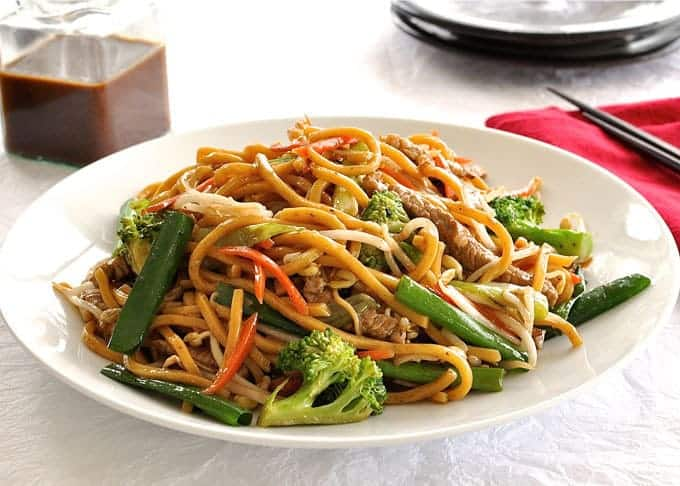

Fake Noodles

Description
With this recipe, you can learn the meaning of FAKE noodles.
If you cut out half the ingredients, it makes a quick and tasty late-night drunk snack.
Ingredients
- Egg noodles, 1 portion
- 1/2 onion, sliced
- 1 egg, beaten
- A clove of garlic, minced
- Some ginger, minced
- Dark soy sauce
- Shaoxing wine
- Sesame oil
- A pinch of MSG (very optional but probably tasty)
Steps
- Cook the noodles as per the pack instructions.
- Once cooked, drain and put in a bowl. Add some soy sauce and sesame oil and mix. Within a few minutes the noodles will have soaked up the soy sauce and sesame oil, making them very flavoursome. The dark soy sauce also gives them a great colour.
- Heat a wok on a medium heat, with some neutral-tasting oil - vegetable oil is fine. Make sure the sides are all coated.
- Add the egg and cook until it is mostly set. Then roll it up and move to the side of the wok.
- Add the aromatics and reduce the heat to low. Keep everything moving for about a minute.
- Put the heat back up to medium and add the onions.
- Once cooked add the noodles and mix all up. Hack up the egg roll and mix it in too.
- Add a little more oil around the edge of the wok. Then add some soy sauce around where the oil was drizzled. The smell and taste is very different from just plopping it in the middle and mixing it up. This way, it is exposed to the full heat of the cooking surface.
- After 30 seconds to a minute, add a capful of Shaoxing wine.
- Add a sprinkle of MSG.
- Garnish with spring onions if you like.
- Scoff!